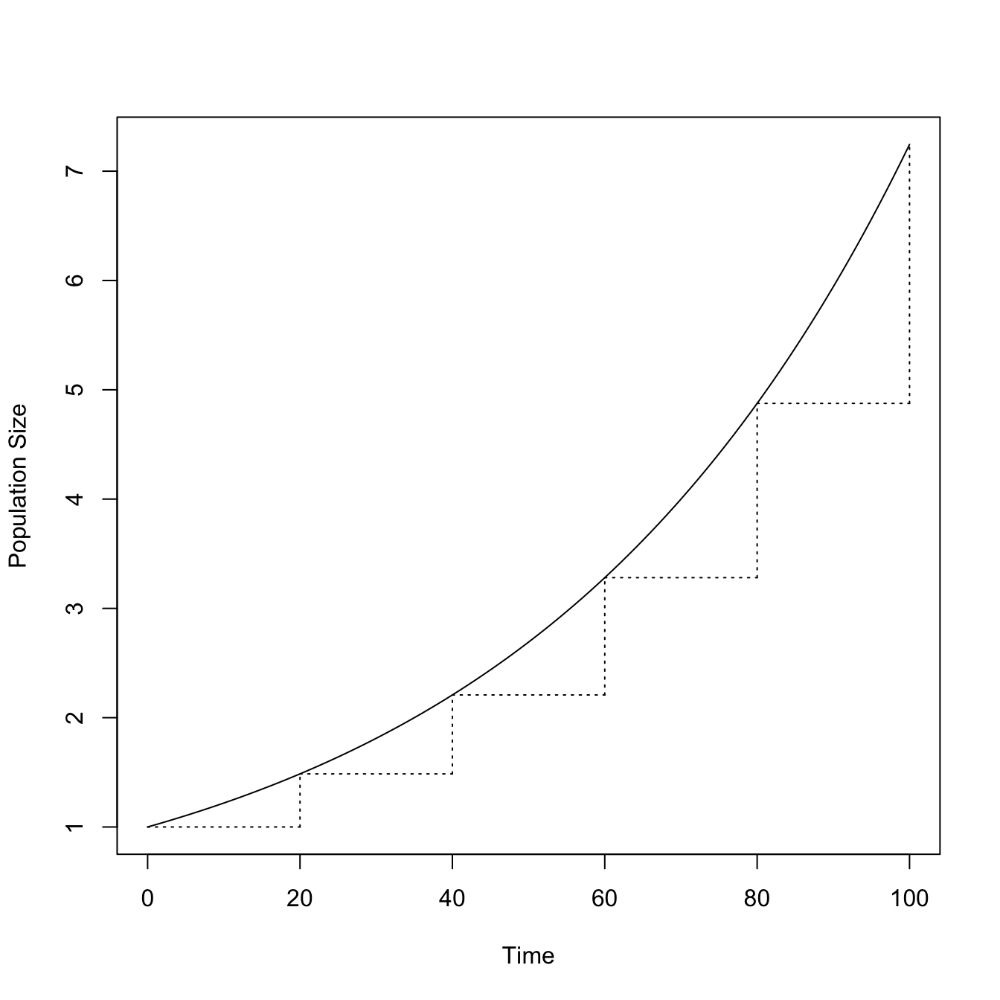
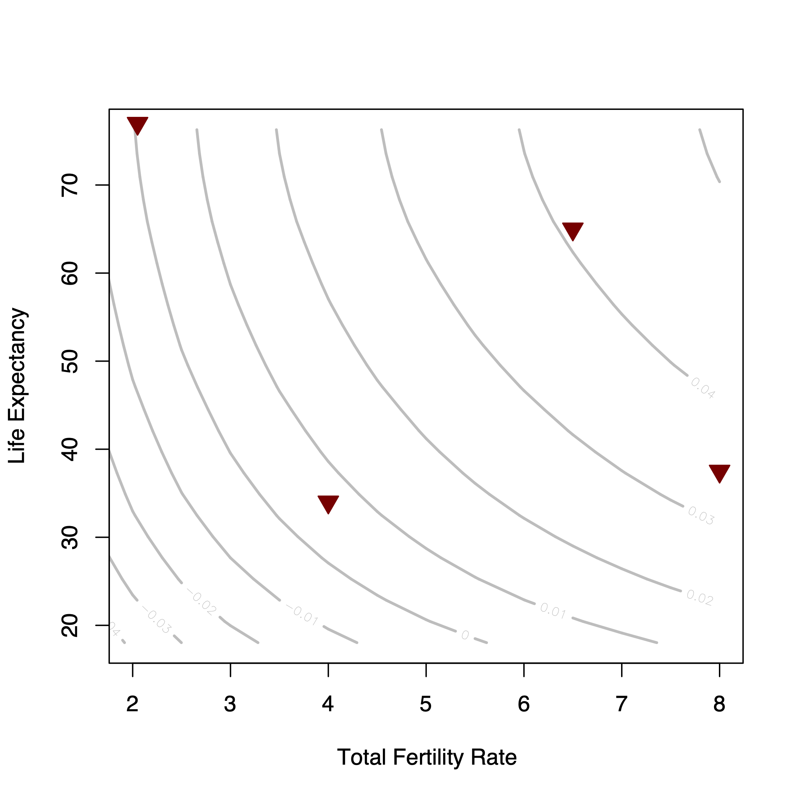
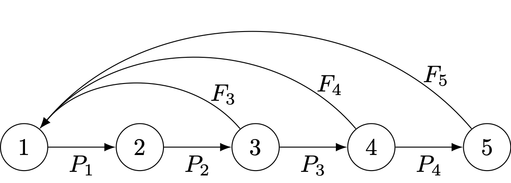

A fundamental feature of the human predicament is the growth and size of human populations. Here, we will introduce some simple models of population growth that are essential for understanding human ecology, resource use, etc.
3.1 Population Growth
The total human population now substantially exceeds six billion people. Yet when modern humans first emerged on the savannas of Africa, our population was very small. Population growth—often dramatic—is a central feature of human history and the human experience. Here is a plot of the growth of the global human population from 10,000 years before present to the present day.
We can see from this plot that there appear to be multiple regimes of apparent stagnation, moderate growth, occasional decline, and very rapid growth.
Coale (1974) suggested that the median estimate for world hunter-gatherer populations at the dawn of agriculture was 8 million. Coale took the emergence of humans to be about a million years ago. Our contemporary understanding of human evolution indicates that it was a much more complicated process than was generally thought when Coale wrote his important paper on human population history. Rather than a million years of human history, contemporary paleoanthropologists would argue that anatomically modern humans represent the relevant population and that they have considerably less than a million years. Regardless of when we begin counting modern human populations (200Kya as suggested by mtDNA or 60Kya as suggested by the Upper Paleolithic Revoution), this implies a very small growth rate for much of human history on earth.
Even if human population started with a hypothetical Adam and Eve, it has only doubled 32 times, with an average doubling time of 30,000 years. Coale, in fact, stated that the world has doubled 31 times. It just so happens that the total human population has approximately doubled again from the value of 3.9 billion that Coale cites in his 1974 paper!
3.1.1 Simple Models of Population Growth
Consider a closed population that has \(N\) individuals in it. A closed population is one in which there is neither immigration nor emigration. We perform a census every year and thus have measurements of the annual population size. Assume that the population is characterized by a per capita birth rate of \(B\) and a per capita death rate of \(D\). This means that in any given year there will be \(N \times B\) births and \(N \times D\) deaths. Note also that if there are \(N \times D\) deaths, the surviving fraction of the population will be \(N \times (1-D)\). Assume that these rates remain constant over some period of time. What happens to the population? As we move from one year to the next, the population will change. Next year’s population will consist of those who survived the current year (\(N \times (1-D)\)) and those who entered the population in the current year (\(N \times B\)). It is not difficult to see that as we go from our starting time, \(t=0\), to the next time, \(t=1\), the size of the population will simply be
\[
N_1 = BN_0 + (1-D)N_0,
\]
where the population size is subscripted by the year in which it is measured (thus, \(N_0\) is the population size in time zero).
Using elementary algebra, and writing \(R = 1 + B - D\), we can re-write this equation as
\[
N_1 = RN_0.
\]
Say now that we want to find the population size in for \(t=2\). This is clearly
\[
N_2 = RN_1 = R(RN_0) = R^2N_0.
\] It should not be difficult to see that for any arbitrary time \(t\), given an initial population \(N_0\) and constant per capita birth and death rates \(B\) and \(D\), the size of the population will be
\[
N_t = R^tN_0
\]
This is what is known as geometric growth. \(R\) is the multiplicative annual growth rate. Geometric growth occurs when constant birth and death rates work on a population in discrete time steps. Each year, the population increases (or decreases if deaths exceed births) by a factor of \(R\). Another way to think of this is that the ratio of the population size from one year to the next is a constant \(R\). This constant growth, without regard to the size of the population, can lead to very large populations quite quickly. This arises because the process of geometric growth is compounding. When t gets even moderately large and \(R>1\), \(R^t\) can be a very big number.
t <-seq(1:100)R <-rep(1.02,100)RR <- R^tplot(0:100, c(1,RR),type="l", xlab="Time", ylab="Population Size")segments(0,1.02^0,20,1.02^0,lty=3)segments(20,1.02^0,20,1.02^20,lty=3)segments(20,1.02^20,40,1.02^20,lty=3)segments(40,1.02^20,40,1.02^40,lty=3)segments(40,1.02^40,60,1.02^40,lty=3)segments(60,1.02^40,60,1.02^60,lty=3)segments(60,1.02^60,80,1.02^60,lty=3)segments(80,1.02^60,80,1.02^80,lty=3)segments(80,1.02^80,100,1.02^80,lty=3)segments(100,1.02^80,100,1.02^100,lty=3)

Geometric growth applies when constant rates work on a population in discrete time steps. Remember, we measured the population size via a census every year and we assume that we only know the per capita birth and death rates on an annual time scale. In principle, human births and deaths do not happen on an annual scale. Rather, they occur more or less continuously throughout the year. However, data limitations usually mean that we only know things like population size or vital rates on an annual (or longer!) basis. The term geometric growth is perhaps not as familiar in common parlance as a related term, exponential growth. Exponential growth is simply the result of constant instantaneous birth and death rates working on a population in continuous time. Most applied work in demography (e.g., population forecasts) is done in discrete time because data are collected on an annual or decadal basis (e.g., the United States census). There are also some organisms in which life-cycle transitions do, in fact, happen on a more or less discrete basis. The population dynamics of organisms with marked birth seasonality or discrete life-cycle stages, such as most insects and many plants, are more naturally modeled in discrete time. However, most demographic and evolutionary theory is done in terms of continuous time so it is important to have a familiarity with the notation for this process as well. Unlike the geometric growth model, which requires only elementary algebra, solving the growth equation in continuous time requires calculus.
When we work in continuous time, we write our instantaneous rates as lower case symbols, \(b\) and \(d\), and we define the instantaneous rate of increase (or decrease) as \(r=b-d\). The continuous growth model for an unstructured population is represented as a simple differential equation:
\[
\frac{dN}{dt} = rN
\] We solve this by separating variables and integrating, yielding
\[
N(t) = N(0) e^{rt},
\]
where \(e=2.7183\ldots\) is the base of the natural logarithm.
Note tha in the exponential growth case, all we have really done is substitute \(e^r\) for \(R\) (since \((e^r)^t=e^{rt})\). Thus the ratio of the population size in two successive years will be \(e^r\) and the ratio of population sizes between two times \(t\) years apart is \(e^{rt}\)
As with geometric growth, exponential growth can lead to very large population sizes quite quickly. Indeed, in everyday speech when a people say something is “increasing exponentially,” they are usually using a shorthand for “increasing really, really fast.” Populations can increase rapidly and not be increasing exponentially. Also, exponential growth is hardly the most rapid type of growth, as we will see shortly. When we use the term “exponential growth” what we mean is that the ratio of the population in two successive time steps is \(e^r\). Another way of saying this is that for exponential growth, the per capita rate of increase of the population remains constant, regardless of the size of the population.
To understand how this constant per capita growth works, it is useful to think in terms of the doubling time of the population. That is, how many years will it take for a population growing at instantaneous rate \(r\) to become twice as big as it currently is? We begin by noting that all we care about is the ratio of population size—we want to know when the population will be twice as big as it currently is, regardless of the specifics of the current size. We thus use values of \(N(0)=1\) and \(N(t)=2\). We can now solve the exponential gowth equation for \(t\) by taking natural logarithms of both sides and rearranging to yield
\[
\frac{0.6931}{r}=t.
\]
The numerator is simply the natural logarithm of 2 to four decimal places. If a population is growing with an instantaneous rate of 0.01 (1%), then it will take approximately 69 years to double. If it is growing at 2%, then it will double in 35 years. In the twentieth century, the world population increased at a rate of approximately 1.37%. This means a doubling time of 50.6 years. Thus, the human population doubled approximately twice in the twentieth century alone if we assume that the growth rate was constant. This equation can just as easily be used to find the halving time of a population that is declining at a constant rate as well (\(\log(0.5)=-0.6931\)). Thus, a population declining at a constant rate of 1% (i.e., \(r=-0.01\)) will be half its current size in 69 years.
We can use this equation to calculate the average growth rate under an exponential model when we have two population estimates with a known interval between censuses. This time, we simply solve for \(r\), again taking natural logarithms of both sides:
\[
r = \frac{\log N(t) - \log N(0)}{t},
\]
Using values from the US Census Bureau’s historical estimates of world population, we can calculate the implied exponential growth rate for the total human population in the twentieth century as
\[
r = \frac{\log(6100) - \log(1550)}{100} = 0.0137.
\]
Returning to Coale’s (1974) statement that the the human population has doubled only 32 times with an average doubling time of 30,000 years, even if it started from a hypothetical two individuals, we can see that the growth rate for Homo sapiens has been \((\log(6.7\times 10^9) - \log(2))/200,000=0.00011\). Here, I have used the more conservative value for the origin of modern humans of 200kya, which is based on the coalescence time of mtDNA. Calculating the doubling time from this growth rate, we actually get \(\log(2)/0.0001=6,321\). This doubling time is approximately five times shorter than Coale’s estimate because we use a time of 200k years instead of 1M years.
When we plot the population size against time for the cases of both geometric and exponential growth, we will see that the curves are convex (i.e., bend up). They are characterized by positive second derivatives. A useful graphical diagnostic for such growth is to plot the logarithm of population size against time. Because of the role that the base of the natural logarithm plays in the exponential growth model, population biologists typically work with natural logarithms and that is what we will use here. For the case of exponential growth, take the natural logarithms of both sides of the growth equation:
\[
\log N(t) = \log N(0) + rt
\]
This is an equation for a straight line with a \(y\)-intercept of \(\log N(0)\) and slope of \(r\). This result is useful for a number of reasons. First, it is much easier to visually diagnose the existence of a straight line compared to an exponential curve. Second, it provides a simple means for estimating \(r\) using the statistical technique of linear regression.
3.1.2 Balance
We have seen how a net excess of births over deaths can lead to explosive population growth. For instance the growth of the total human population from a hypothetical first woman and man to the 8 billion people inhabiting the earth today resulted from an excess of just one ten-thousandth over 200 thousand years. When thinking about mortality and fertility, it is useful to employ summary measures that have more intuitive appeal than annual (or especially instantaneous!) rates. The two most often used summary measures of mortality and fertility are life expectancy at birth and the total fertility rate respectively. Life expectancy at birth, which we denote as \(e_0\), actually has several interpretations that actually all mean the same thing. The most natural of these is that \(e_0\) is the average number of years lived by an individual born into the population. It is also the average age of death in a population. The total fertility rate is simply the sum of a hypothetical average woman’s age-specific fertility assuming that she lived to the end of her reproductive span.
Human populations exhibit tremendous diversity in demographic rates. In Jones (2009), I used four populations that largely bracket the demographic space our species occupies. I only considered combinations of mortality and fertility that yield a growth rate of \(r>0\) since, in the long run, any population that averages a growth rate of \(r \leq 0\) goes extinct.

Human demographic space. Isoclines show the growth rate implied by the combination of TFR and life expectancy. Triangles represent four populations that largely define the boundaries of human demographic space. From left to right: USA (low mortality, low fertility), !Kung (high mortality, low fertility, Venezuela in 1967 (low mortality, high fertility), and the Forest-period Ache (high mortality, high fertility).
Despite all the demographic diversity exhibited by our species, in the aggregate, the world population has been very close to zero growth for nearly its entire history as seen in the long horizontal leg of the plot of historical population growth or in the calculation that the long-run rate of increase of the human species is just over one on-hundredth of a percent per year. This observation suggests that, while there is a large degree of diversity in observed patterns, the possible combination of fertility and mortality patterns are highly constrained. Zero growth means that the ratio of population size from one generation to the next is equal to one. This means that from the geometric-growth equation, \(R=1\) or from the exponential-growth equation, \(r=0\) so that \(e^r=1\). In order for this ratio to be equal to one from one generation to the next, it should be clear that the average person should exactly replace herself. If the average person lives for \(e_0\) years, then the average person should also have \(1/e_0\) (same-sex) offspring. If we denote the gross fertility rate as \(b\), the simple equation that specifies these relationships is
\[
e_0\, b = 1.
\] This equation comes in handy when you want to assess the plausibility of demographic arguments.
3.1.3 Growth Rate of a Mixture of Populations
A population size \(Q\), with growth rate \(r\), increases in numbers by \(Qe^{rt}\) over the interval \(t\). The intrinsic rate of increase, \(r\), is the per capita rate of increase of the population. Thus, by definition, we can write it as:
\[
r = \frac{1}{N(t)}\cdot\frac{dN(t)}{dt}
\]
For a mixture of \(n\) subpopulations, each with its own rate of increase \(r_{i}\), the increase in interval \(t\) will simply be
This is just a weighted mean of the subpopulation growth rates, with weights the initial population size of the subpopulations.
How does the mean rate of increase change? Differentiate \(\tilde{r}\) with respect to \(t\):
\[ \frac{d\tilde{r}}{dt} = \frac{\sum_{i}^{n}
Q_i r^{2}_{i} e^{r_i t}}{\sum_{i}^{n} Q_i e^{r_i t}} -
\left(\frac{\sum_{i}^{n} Q_i r_i e^{r_i t}}{\sum_{i}^{n} Q_i e^{r_i
t}}\right)^2.
\] This messy looking equation actually has a pretty straightforward form, namely, \(E(X^2) - E(X)^2\), which is the definition of variance of the random variable \(X\). Thus,
\[ \frac{d\tilde{r}}{dt} = \sigma^{2}(t) \]
What does this mean? First, clearly since variance is, by definition, non-negative, \(\tilde{r}\) increases. Can it increase without bound? No, since \(\tilde{r}\) is the average of an ensemble of constituent \(r_i\), it can never be greater than the largest of its constituents. Note that this derivation is reminiscent of Fisher’s Fundamental Theorem of Natural Selection. It also means that the sum of a mixture of population projections with different growth rates will grow faster than the the population projected by the mean growth rate. This arises because of Jensen’s Inequality, which states for a convex function (i.e., one with a positive second derivative like exponential growth):
\[ E[f(x)] \geq f(E[x]). \] In words, the expected value (i.e., mean) of a convex function of some random variable \(X\) is greater than or equal to the function of the expected value of \(X\).
Note that the inequality is reversed for concave function, as we will see in Chapter 5.
The derivation of this formula relies on assuming that age-specific demographic rates like fertility and survival are constant and then uses an identity for finite geometric sums, namely,
\[
\sum_{k=0}^{n} r^k = \frac{1-r^{n+1}}{1-r}.
\] We will skip the derivation here, though you can find it in my Notes on Life History Theory.
Cole made some pretty heroic assumptions, the most notable of which is that there is no mortality in the population. Keeping this limitation in mind, Cole’s famous formula for the maximum possible growth rate is:
\[
1 = e^{-r} + b e^{-r\alpha} - be^{-r(n+\alpha)},
\] where \(b\) is the birth rate, \(\alpha\) is age at first reproduction, and \(n\) is the age of last reproduction/death.
This is the equation the defines what became known as Cole’s \(r_{max}\). It represents the best-case scenario for the growth of a population (since it assumes no mortality).
We can add just a bit of realism by adding mortality. As Slade, Gomulkiewicz, and Alexander (1998) note, we can just as easily assume that mortality is non-trivial. Continue to assume that mortality is constant within adults. Changes in age-specific mortality for pre-reproductives do not matter—all we need is the fraction of newborn individuals who survive to breeding age, \(f\). Assume that all adults have a constant survival probability \(p\). The fraction alive at age \(x>\alpha\) is thus \(fp^{x-\alpha}\).
The generalization of Cole’s \(r_{max}\) equation that Slade, Gomulkiewicz, and Alexander (1998) derive is:
\[1 = p\; e^{-r} + f\; b\; e^{-r\alpha} - f\; b\; p^{n+1} e^{-r(n+\alpha)}.\] Some calculations. Use uniroot() to find the value of of \(r\) that solves the equation \(F(r)-1=0\), where \(F(r)\) is Cole’s or Slade et al.’s equation.
# L = \lambda = exp(r), multiplicative rate of increase# a = AFR# w = ALR# R = recruitment fraction (i.e., l(\alpha))# b = annual fertility# p = annual survival probability## the function from Cole (1954)cole <-function(r,a,w,b) exp(-r) + b*exp(-r*a) - b*exp(-r*(w+1)) -1## see the output of uniroot -- growth rate is "root"uniroot(cole, lower=0.01, upper=0.1, a=20, b=0.125, w=50)
# use r instead of \lambda to make comparable with Colecole2 <-function(r,a,w,R,b,p){ p*exp(-r) + R*b*exp(-r*a) - R*b*(p^(w - a +1))*exp(-r*(w+1)) -1}uniroot(cole2, lower=0, upper=0.05, a=20, b=0.125, w=45, R=0.8, p=0.98)
# what's a good value of R? 75% survival to age 5 and then 2% annual mortality# thereafter is not unreasonable(R <-0.75*0.98^15)
[1] 0.5539268
# Ache-likeache <-uniroot(cole2, lower=0, upper=0.05, a=20, b=0.2, w=45, R=0.55, p=0.98)## surprisingly close to Hill & Hurtado's observed r for the Forest Period# Hutteriteshutterites2 <-uniroot(cole2, lower=0.01, upper=0.2, a=22, b=0.3, w=50, R=0.75, p=0.99)(humans <-round(c(Ache=ache$root, Hutterites=hutterites2$root), 3))
Ache Hutterites
0.026 0.052
The most fecund population of humans ever recorded has a maximum growth rate of 6.9% annually, assuming no mortality, and 5.2% if we assume very low mortality. Of course, fertility is hardly constant across the nearly 30-year span of human reproduction. Even among the highly fecund Hutterites, fertility declines substantially with age. This means that this value of \(r_{max} = 0.052\) is much higher than what is realistically the maximum possible growth rate. This does not even account for the fact that mortality also increases with age (i.e., is not a constant 1% across adulthood) and the recruitment fraction of 75% is also high. Mortality removes newborns and pre-reproductive children from the potential breeding pool, but so do social factors such as failure to enter into a reproductive union. This value is frequently around 20%, even in conservative populations with very strong pro-natalist norms.
In reality, the highest growth rate achievable by actual human populations is probably quite close to that of Venezuela in the late 1960s. At the time, life expectancy at birth in Venezuela was nearly as high as it was in the United States, at almost \(e_0=70\). Despite this relatively low mortality, Venezuela in the late sixties was also characterized by extremely high fertility with a total fertility rate of more than seven! In 1967, the intrinsic rate of increase for Venezuela was \(r=0.041\). This seems like a pretty reasonable working value for the realistic maximum growth rate achievable by a human population. This matters a great deal as we will see in Chapter 5, since the it means that the upside of potential fitness-related gambles is highly constrained while the downsides are not.
3.2 Models for Structured Populations
As we noted in the last section, demographic rates are not constant with age (and many other possible states). We can extend our simple models for population growth to account for age-structure. The characteristic equation for a population with given mortality and fertility schedules unites the important demographic concepts of mortality, fertility, age-structure, and growth into a single relationship. I will not derive the characteristic equation here, but you can check out my Notes on Life History Theory for a full derivation of the equations that characterize the stable population model, including the characteristic equation.
We typically assume what’s called female demographic dominance and analyze the female component of the population. Women give birth and the growth of populations is highly constrained by the female component.
Consider a population with age-specific fertility rate \(m(a)\) for women age \(a\) and (cumulative) survival to age \(a\) of \(l(a)\). Let age at first birth be \(\alpha\) and age at last birth be \(\beta\). The characteristic equation, often called the Euler-Lotka equation, is then
\[
1 = \int_{\alpha}^{\beta} e^{-ra} l(a) m(a) da.
\] The unique solution is the value \(r\) that equates the two sides of the characteristic equation.
In a stationary population, where \(r=0\), \(e^{-ra}=1\) for all \(a\) (zero times anything is zero!), and the equation reduces to that for the net reproduction number, which is simply the sum of net fertility across all ages.
\[
R_0 = \int_{\alpha}^{\beta} l(a) m(a) da = 1.
\] In a stationary population, each woman replaces herself, on average, with a single daughter.
3.3 Matrix Population Models for Structured Populations
It turns out that efforts to create a discrete-time form of the characteristic equation were often confused. The best way to represent structured populations in discrete time uses matrix algebra (H. Caswell 2001). Once again, you can find more details in my Notes on Life History Theory.
The Leslie matrix is a special matrix for demography and population biology. A Leslie matrix is sparse with two sets of non-zero elements: (1) age-specific fertilities (\(F_j\)) along the first row, and (2) age-specific survival probabilities (\(P_i\)) along the subdiagonal. Here is an example of a \(5 \times 5\) Leslie matrix:
A Leslie matrix is a representation of an age-structured population. We can also write demographic projection matrices for stage-structured populations.
For matrix \(\mathbf{A}\), the entry \(a_{ij}\) is the transition probability of going from stage \(j\) to stage \(i\): \(a_{ij} \equiv a_{i \leftarrow j}\).
A useful graphical tool to complement matrix models is the life-cycle graph, a directed graph that represents all the transitions in an organism’s life cycle. Like all graphs, the life-cycle graph is composed of a set of nodes and a set of edges. The nodes represent the states of the population such as the age classes, stages, subgroups, or localities (depending on the specifics of the model). The edges are directed and represent transitions between states. For the age-structured model, the only possible transitions are survival (from age-class \(i\) to age-class \(i+1\)) and fertility (from age-class \(i\) to age-class 1).

Life-cycle graph corresponding to the \(5 \times 5\) Leslie matrix
Demographic projection matrices typically fall under the heading of non-negative negative matrices, such that when raised to sufficient powers, all matrix elements become positive. Moreover, if our projection matrix has two properties (which not all will), then the population will eventually be characterized by a stable age distribution. The requirements are the the matrix is irreducible and primitive. A matrix/life-cycle graph is irreducible if every state can be reached from every other state. In graph terminology, we say an imprimitive life-cycle graph is strongly connected. Primitivity simply means that the growth generated by repeated multiplication of the matrix is aperiodic. We can define a loop on a life-cycle graph as an alternating sequence of nodes and edges that starts and finishes on the same node. For example 1-2-3-1, 1-2-3-4-1, and 1-2-3-4-5-1 are the loops in our life-cycle graph above. A sufficient condition that ensures primitivity is that the greatest common divisor of the lengths of all the loops in a life-cycle graph is one.
If non-negative, square matrix \(\mathbf{A}\) is irreducible and primitive, it meets the criteria for the Perron-Frobenius Theorem, which states that such a matrix will have a single eigenvalue which is positive, real, and strictly greater than all the others. We call this eigenvalue of the dominant eigenvalue of matrix \(\mathbf{A}\). The dominant eigenvalue of the projection matrix is the asymptotic growth rate (and mean fitness) of the population described by that matrix. The corresponding right and left eigenvectors represent the stable age distribution and the reproductive values, respectively, of the population.
Denote the dominant eigenvalue of matrix \(\mathbf{A}\) as \(\lambda\) and the corresponding right and left eigenvectors as \(\mathbf{u}\) and \(\mathbf{v}\). Hal Caswell (1978) showed that the sensitivity of the dominant eigenvalue to a small perturbation in matrix element \(a_{ij}\) is given by the product of the reproductive value of stage \(i\) (the receiving state) and the stable age value of stage \(j\) (the giving state), assuming that these vectors have been normed such that \(\langle \mathbf{v},\mathbf{u} \rangle = 1\).
These sensitivities turn out to be very important in a number of applications in population biology. For example, the selection gradient in the multivariate breeder’s equation discussed in Chapter 2 is simply a vector of sensitivities. Sensitivities also provide important information about which demographic rates we need to measure precisely if we are to have any hope of making accurate population forecasts. In Chapter 10, we will discuss a fundamental trade-off between the responsiveness to selection (or optimality) and robustness that arises because of sensitivities with different signs appearing in equations relating to these qualities (Schmid et al. 2022).
It is often useful to transform sensitivities into elasticities or proportional sensitivities. Note a handy fact from calculus:
An elasticity tells us by what percentage \(\lambda\) will change if we change \(a_{ij}\) by, say, 1%.
Elasticities are ubiquitous in economics. We will encounter them in both Chapter 5 and Chapter 7.
3.4 Density Dependent Growth
There is no exception to the rule that every organic being naturally increases at so high a rate, that if not destroyed, the earth would soon be covered by the progeny of a single pair. Even slow-breeding man has doubled in twenty-five years, and at this rate, in a few thousand years, there would literally not be standing room for his progeny. Linnaeus has calculated that if an annual plant produced only two seeds and there is no plant so unproductive as this and their seedlings next year produced two, and so on, then in twenty years there would be a million plants. The elephant is reckoned to be the slowest breeder of all known animals, and I have taken some pains to estimate its probable minimum rate of natural increase: it will be under the mark to assume that it breeds when thirty years old, and goes on breeding till ninety years old, bringing forth three pairs of young in this interval; if this be so, at the end of the fifth century there would be alive fifteen million elephants, descended from the first pair. Darwin, The Origin of Species
To understand catastrophes, it helps to know something about stability analysis. We’ll do a quick introduction here, using the logistic population growth model as a concrete example.
3.4.1 Logistic Growth
The logistic growth model is a model of population growth where the rate of increase of the population depends on the population size. In general, density-dependent models work such that as the population size gets large, the growth rate decreases:
\[ \frac{dN}{dt} = N f(N) \]
\(f(N)\) is some function of population size \(N\) that decreases in \(N\). The simplest form for this function is linear:
\[ f(N) = r(1 - N/K), \]
where \(r\) is the intrinsic rate of increase and \(K\) is known as the carrying capacity of the population. This leads to the most commonly seen version of the logistic equation
\[
\frac{dN}{dt} = rN (1 - N/K)
\]
The logistic model is sigmoidal, meaning that it is S-shaped. It turns out that the logistic model is simple enough that it can be solved analytically. When we integrate it, we get the following expression for the population size at time \(t\):
\[N(t) = \frac{N(0)e^{rt}}{1+N(0)(e^{rt}-1)/K} \]
This is a logistic function, which gives the population model its name. We can write out an R expression and plot the logistic curve as a function of time.
For a variety of reasons, it often turns out to be easier to work with what is known as the recruitment curve for the population model. Rather than the integrated model in time, this is essentially a plot of the density-dependent function \(f(N)\) times the current population size \(N\) as a function of the population size.
We call it a recruitment curve because it plots the number of recruits we get when the population is a given population size.
If you were a natural resource manager like a hunter or forester, at what population size would you want to harvest your population to maximize your yield? The Maximum Sustainable Yield is the peak of the recruitment curve and represents the value of \(N\) that maximizes production of the natural resource. For the logistic model, this curve is symmetric. In general, this is not true (and leads to interesting phenomena such as overshoot and subsequent population crashes/booms).
3.5 Stability Analysis of the Logistic Model
First, we solve the logistic equation for its equilibria. To do this, we set the rate of population change equal to zero and find the conditions that make this true.
\[ \frac{dN}{dt} = rN(1-N/K) = 0 \]
It’s not difficult to see that there are two equilibria:
\(N=0\)
\(N=K\)
The first solution is when the population size is exactly zero. When there is no population, there is no chance of the population growing, so that makes sense. The second solution is when the population size equals the carrying capacity, \(K\). This also makes sense, since it’s the basic idea behind density-dependent population growth models – when the population reaches its carrying capacity, it should stop increasing. So now the question is: are these two equilibria stable?
When we calculate the stability of a continuous-time models like the logistic growth model, we basically tweak a population that is at equilibrium and see what happens. At least two possibilities include:
It will continue to move in the direction of the tweak
It will move back to the equilibrium value
To perform out stability analysis, write the production function in generic form:
\[ \frac{dN}{dt} = F(N) \]
For the logistic model \(F(N) = rN(1-N/K)\). We’ve already determine the equilibria (\(N=0\) and \(N=K\))
Define a deviation from an equilibrium point \(\hat{N}\):
\[ n = N - \hat{N} \]
Rearrange, putting \(N\) on the left-hand side \(N = \hat{N}+n\), and substitute back into the generic equation.
\[ \frac{d(\hat{N}+n)}{dt} = F(\hat{N}+n) \]
Now, \(\hat{N}\) is a fixed number (i.e., it’s the equilibrium), so it won’t change. All the change in this differential will therefore come from \(n\) which is free to vary (its change is, in fact, what we care about here)
\[ \frac{dn}{dt} = F(\hat{N}+n) \]
We don’t (necessarily) know what \(F(\hat{N}+n)\) will be. For many interesting models, there is no closed-form solution to this differential equation. Our strategy is therefore to approximate it with a Taylor Series approximation, which means that we’re assuming that \(n\) is small and that we are contenting ourselves to investigating the behavior of our model near the equilibrium.
\(F^{\prime}(\hat{N})\) is the derivative of \(F\) with respect to \(N\) evaluated at \(\hat{N}\). The equation for the dynamics of our perturbation becomes:
But, we are evaluating at an equilibrium where, by definition, \(F(\hat{N})=0\), so we are left with:
\[ \frac{dn}{dt} = F^{\prime}(\hat{N})n \]
Rename as follows to make notation simpler:
\[ F^{\prime}(\hat{N}) = \lambda \]
This gives us our final step
\[ \frac{dn}{dt} = \lambda n \]
This is simply the exponential growth model, the solution of which is:
\[ n(t) = n(0)e^{\lambda t} \]
What this tells us is that if \(\lambda > 0\), the equilibrium is unstable because it will grow away from the equilibrium without bound. On the other hand, if \(\lambda < 0\), the equilibrium is stable because the perturbation will decay back to zero (i.e., back to the equilibrium).
This whole process is known as linearizing around the equilibrium or local linearization.
Returning to the logistic model, we can calculate \(\lambda = F^{\prime}(\hat{N})\). We use the product rule for differentiation to show that for \(\hat{N}=0\), \(\lambda=r\) and for \(\hat{N}=K\), \(\lambda=-r\). So what does this mean? For small deviations near the equilibrium of \(N=0\), the population will increase exponentially at rate \(r\). For small deviations near the equilibrium of \(N=K\), the population will decay back to the equilibrium exponentially at rate \(-r\).
3.5.1 Steps to Calculating \(F^{\prime}(N)\) for the Logistic Model
Where do the values \(F^{\prime}(N) = r\) and \(F^{\prime}(N) = -r\) for the two equilibria of the logistic model come from? Use the Product Rule for Differentiation. If we let some function \(h(N)\) be the product of two other function \(f(N)\) and \(g(N)\), the product rule for differentiation specifies that:
For the logistic model, \(f(N) = rN\) and \(g(N) = (1-N/K)\). Therefore, \(f^{\prime}(N) = r\) and \(g^{\prime}(N) = -\frac{1}{K}\). Therefore,
\[h^{\prime}(N) = r(1-N/K) -\frac{rN}{K} \]
Finally, substitute back in the values for the equilibria (\(N=0\) and \(N=K\)) and we recover our to values for \(\lambda\):
\[ N \rightarrow 0,~~~~~h^{\prime}(N) = r \]
\[ N \rightarrow K,~~~~~h^{\prime}(N) = -r \]
Caswell, H. 2001. Matrix Population Models: Construction, Analysis and Interpretation. 2nd ed. Sunderland, MA: Sinauer.
Caswell, Hal. 1978. “A General Formula for the Sensitivity of Population Growth Rate to Changes in Life History Parameters.”Theoretical Population Biology 14 (2): 215–30. https://doi.org/10.1016/0040-5809(78)90025-4.
Coale, A. 1974. “The History of Human Population.”Scientific American 231 (40-51).
Cole, L. C. 1954. “The Population Consequences of Life History Phenomena.”Quarterly Review of Biology 29 (2): 103–37. http://www.jstor.org/stable/2817654.
Schmid, Max, Maria Paniw, Maarten Postuma, Arpat Ozgul, and Frédéric Guillaume. 2022. “A Trade-Off Between Robustness to Environmental Fluctuations and Speed of Evolution.”The American Naturalist 200 (1): E16–35. https://doi.org/10.1086/719654.
Slade, Norman A., Richard Gomulkiewicz, and Helen M. Alexander. 1998. “Alternatives to Robinson and Redford’s Method of Assessing Overharvest from Incomplete Demographic Data.”Conservation Biology 12 (1): 148–55. https://doi.org/10.1111/j.1523-1739.1998.96273.x.